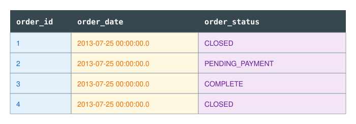
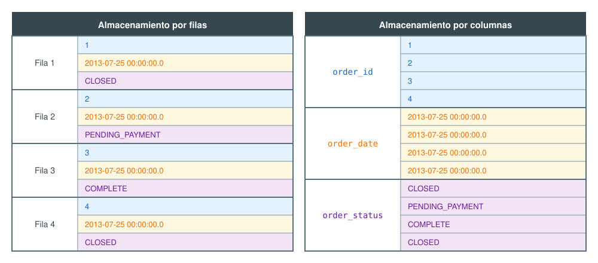
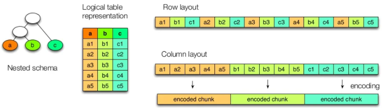
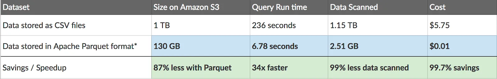
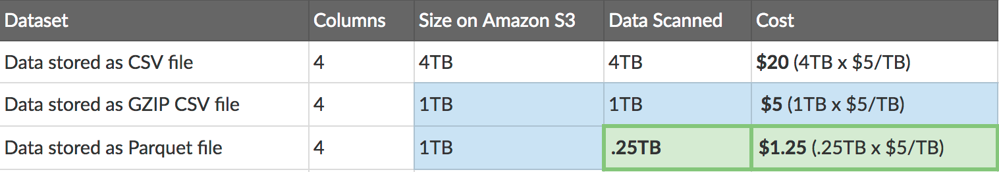
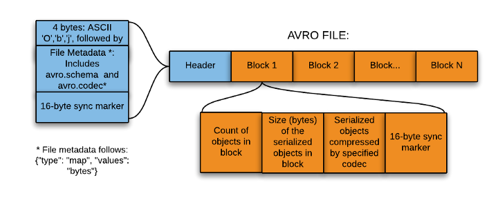
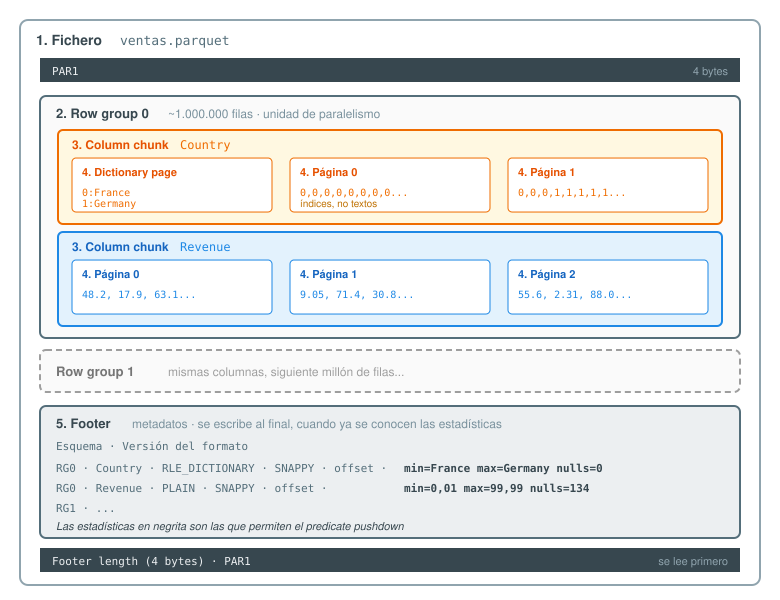
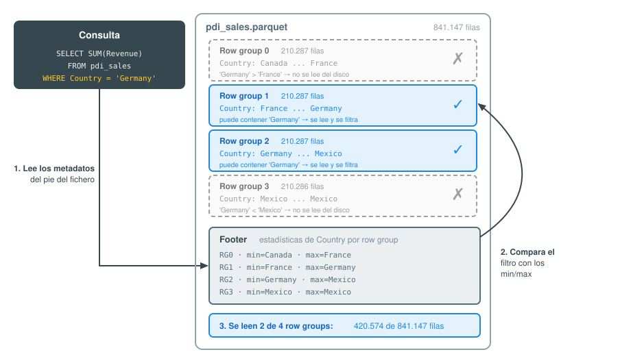

Formatos de datos
Changelog:
- Codificación de columnas y pushdown de predicados - Julio 2026
- Nuevas actividades - Julio 2026
- Apache Arrow — Febrero 2026
- Formatos de tabla abiertos - Febrero 2026
En la primera unidad de trabajo ya vimos una pequeña introducción a los diferentes formatos de datos.
Conforme los datos viajan a través de los diferentes pipelines, los ingenieros de datos deben gestionar la serialización en diferentes formatos y ser capaces de convertir unos en otros.
Las propiedades que ha de tener un formato de datos son:
- independiente del lenguaje
- expresivo, con soporte para estructuras complejas y anidadas
- eficiente, rápido y reducido
- dinámico, de manera que los programas puedan procesar y definir nuevos tipos de datos.
- formato de fichero standalone y que permita dividirlo y comprimirlo.
Para que Hadoop/Trino/DuckDB/Spark o cualquier herramienta de analítica de datos pueda procesar documentos, es imprescindible que el formato del fichero permita su división en fragmentos (splittable in chunks).
Si los clasificamos respecto al formato de almacenamiento tenemos formatos de tipo:
- texto (más lentos, ocupan más pero son más expresivos y permiten su interoperabilidad): CSV, XML, JSON, etc...
- binario (mejor rendimiento, ocupan menos, menos expresivos): Avro, Parquet, ORC, etc...
Si comparamos los formatos más empleados a partir de las propiedades descritas tenemos:
| Característica | CSV | JSON | JSONL | Avro | Parquet | ORC |
|---|---|---|---|---|---|---|
| Legible por humanos | 👍 | 👍 | 👍 | |||
| Independencia del lenguaje | 👍 | 👍 | 👍 | 👍 | 👍 | 👍 |
| Expresivo (datos anidados) | 👍 | 👍 | 👍 | 👍 | 👍 | |
| Eficiente en tamaño | 👍 | 👍 | 👍 | |||
| Standalone (autodescriptivo) | ❔ | 👍 | 👍 | 👍 | 👍 | 👍 |
| Divisible | ❔ | 👍 | 👍 | 👍 | 👍 | |
| Orientado a columnas | 👍 | 👍 | ||||
| Pushdown de predicados | 👍 | 👍 | ||||
| Evolución de esquema | ❔ | ❔ | 👍 | ❔ | ❔ | |
| Soporte VARIANT | ❔ | ❔ | ❔ | 👍 | ❔ | |
| Uso típico | Intercambio | APIs | Logs, eventos | Streaming | Analítica | Analítica (Hive) |
Dos matices de la tabla
- Divisible ❔ en CSV: un CSV en texto plano es divisible, pero comprimido con gzip deja de serlo. Avro, Parquet y ORC siguen siendo divisibles aun comprimidos, porque comprimen por bloque, row group y stripe respectivamente.
- Standalone 👍 en Avro: vale para el fichero contenedor
.avro, que incluye el esquema en su cabecera. Los mensajes Avro que viajan por Kafka con Schema Registry no son standalone: solo se envía un identificador y el esquema vive fuera. Lo veremos en el bloque de streaming.
Las ventajas de elegir el formato correcto son:
- Mayor rendimiento en la lectura y/o escritura
- Ficheros troceables (splittables)
- Soporte para esquemas que evolucionan
- Soporte para compresión de los datos (por ejemplo, mediante Snappy).
Filas vs Columnas¶
Los formatos con los que estamos más familiarizados, como son CSV, XML o JSON, son formatos basados en filas, donde cada registro se almacena en una fila o documento. Estos formatos son más lentos en ciertas consultas y su almacenamiento no es óptimo.
JSON vs JSONL
Un documento JSON contiene diferentes pares de clave-valor con los elementos que lo componen ocupando varias líneas.
Un tipo específico de JSON es JSONL (JSON Lines), el cual almacena una secuencia de objetos JSON delimitando cada objeto por un saldo de línea.
{ "empleados": [
{"nombre": "Aitor", "altura": 182, "edad": 48},
{"nombre": "Pedo", "altura": 178, "edad": null}
]
}
{"nombre": "Aitor", "altura": 182, "edad": 48}
{"nombre": "Pedo", "altura": 178, "edad": null}
El precio de no tener esquema
Guardar JSON como texto es cómodo pero caro: cada consulta tiene que parsear el documento entero de cada fila, y una columna de texto no se beneficia de nada de lo que veremos después. La alternativa clásica —aplanar el JSON a columnas tipadas— es rápida, pero cualquier cambio en el origen rompe el pipeline.
Existe una tercera vía moderna, el tipo VARIANT, incorporado a la especificación de Parquet en 2025 y soportado ya por DuckDB, Spark y Delta Lake. La veremos en la siguiente sesión, cuando tengamos un motor con el que interrogarlo.
En un formato basado en columnas, cada columna se almacena en su conjunto de ficheros, es decir, cada registro almacena toda la información de una columna. Al basarse en columnas, ofrece mejor rendimiento para consultas de determinadas columnas y/o agregaciones, y el almacenamiento es más óptimo (como todos los datos de una columna son del mismo tipo, la compresión es mayor).
Supongamos que tenemos los siguientes datos de la tabla orders:

Dependiendo del almacenamiento en filas o columnas tendríamos la siguiente representación:

Como hemos comentado previamente, en un formato columnar los datos del mismo tipo se agrupan, lo que mejora el rendimiento de acceso y reduce el tamaño:

El almacenamiento en columnas y la compresión también presentan algunas desventajas, ya que no podemos acceder fácilmente a registros de datos individuales. Para ello, debemos reconstruir registros leyendo datos de varios archivos de columnas.
Del mismo modo, la actualización de registros supone descomprimir el archivo de columnas, modificarlo, volver a comprimirlo y escribirlo de nuevo en el almacenamiento.
Para evitar reescribir columnas completas en cada actualización, las columnas se dividen en varios archivos, normalmente utilizando estrategias de particionado y clustering que organizan los datos según los patrones de consulta y modificación de la tabla. Aun así, la sobrecarga computacional que implica actualizar una sola fila es muy alta.
Por esto, las bases de datos columnares no se adaptan bien a las cargas de trabajo transaccionales, por lo que las bases de datos transaccionales (OLTP) suelen utilizar algún tipo de almacenamiento orientado a filas o registros.
Codificando las columnas¶
Acabamos de comentar que en un formato columnar "la compresión es mayor" porque todos los datos de una columna son del mismo tipo. Vamos a ver por qué ocurre esto, ya que la clave no es solo la compresión, sino un paso previo: la codificación (encoding).
Antes de comprimir nada, los formatos columnares recodifican cada columna aprovechando que todos sus valores comparten tipo y, normalmente, presentan mucha repetición. Las técnicas más habituales son:
-
Codificación por diccionario (dictionary encoding): si una columna tiene pocos valores distintos (baja cardinalidad), se almacena un diccionario con los valores únicos y cada dato se sustituye por su índice. Por ejemplo, la columna
Countryde nuestro fichero de ventas contiene millones de filas pero solo unos pocos países:Germany, Germany, Germany, France, France, Germany, ...pasa a almacenarse como:
diccionario: {0: Germany, 1: France} datos: 0, 0, 0, 1, 1, 0, ... -
Run-Length Encoding (RLE): si un valor se repite de forma consecutiva, en vez de almacenarlo N veces se almacena el par (valor, número de repeticiones). Sobre el ejemplo anterior,
0, 0, 0, 1, 1, 0se convierte en(0×3), (1×2), (0×1). Cuanto más ordenados estén los datos por esa columna, mejor funciona. - Bit-packing: los índices del diccionario suelen ser números pequeños que no necesitan los 32 o 64 bits de un entero completo. Si solo hay 2 países, basta con 1 bit por valor.
- Codificación delta: en columnas con valores crecientes (fechas, timestamps, identificadores autoincrementales) se almacena el primer valor y, a continuación, solo las diferencias, que son números mucho más pequeños.
Codificación ≠ compresión
Aunque persiguen el mismo objetivo (ocupar menos), son dos capas distintas que se aplican en cascada:
- La codificación es consciente del tipo de dato y se aplica columna a columna. Además, algunos motores pueden operar directamente sobre los datos codificados (por ejemplo, filtrar por el índice del diccionario sin descodificar).
- La compresión (Snappy, gzip, zstd...) es genérica: trata los bytes ya codificados como una secuencia opaca y se aplica por bloques.
Por eso un CSV comprimido con gzip sigue ocupando más que un Parquet con Snappy: el CSV no puede codificar por columnas, solo comprimir texto.
En un formato de filas esto no es posible: en cada registro se mezclan cadenas, enteros y fechas, de manera que no hay homogeneidad que explotar. Esta es la razón de fondo por la que, como veremos ahora, 1TB de CSV se queda en 130GB al pasarlo a Parquet.
Más adelante, cuando trabajemos con Parquet y PyArrow, veremos cómo inspeccionar qué codificación se ha aplicado realmente a cada columna de un fichero.
El tamaño importa¶
El artículo Apache Parquet: How to be a hero with the open-source columnar data format compara un formato basado en filas, como CSV, con uno basado en columnas como Parquet, en base al tiempo y el coste de su lectura en AWS (por ejemplo, AWS Athena cobra 5$ por cada TB escaneado):

En la tabla podemos observar como 1TB de un fichero CSV en texto plano pasa a ocupar sólo 130GB mediante Parquet, lo que provoca que las posteriores consultas tarden menos y, en consecuencia, cuesten menos.
En la siguiente tabla comparamos un fichero CSV compuesto de cuatro columnas almacenado en S3 mediante tres formatos cuando sólo nos interesa los datos de una única columna:

Queda claro que la elección del formato de los datos y la posibilidad de elegir el formato dependiendo de sus futuros casos de uso puede conllevar un importante ahorro en tiempo y costes.
Avro¶
Apache Avro es un formato de almacenamiento basado en filas que ocupa menos y es más rápido que JSON, porque los datos se serializan en binario compacto mientras que el esquema que los describe se define en JSON.
Esa combinación no es casual, y explica por qué Avro es uno de los formatos relevante en el campo del Big Data:
- El esquema viaja siempre con los datos, en la cabecera del fichero. Quien lee un
.avrono necesita nada más para interpretarlo, ni tiene que generar clases ni compilar nada. - Al estar el esquema en JSON, es legible y manipulable por cualquier herramienta.
- Como veremos, dos programas pueden leer y escribir el mismo fichero con versiones distintas del esquema sin romperse. Esta es la característica que distingue a Avro del resto de formatos que estudiaremos.
Por eso Avro es la elección natural cuando los datos cruzan la frontera entre sistemas que evolucionan por separado (típicamente, un productor y un consumidor de Kafka), y no cuando queremos analizar columnas — para eso ya tenemos Parquet.
Formato¶

Un fichero Avro se compone de una cabecera en formato texto y una secuencia de bloques de datos en binario. La cabecera contiene los metadatos (entre ellos, el esquema en JSON y el códec de compresión empleado) y un sync marker: 16 bytes aleatorios que se repiten al final de cada bloque.
Ese sync marker es la clave de dos propiedades que ya anunciamos en la tabla comparativa:
- Divisible (splittable): un lector puede saltar a un punto cualquiera del fichero, buscar hacia delante la siguiente aparición del sync marker y saber que ahí empieza un bloque completo. Así, varios nodos pueden procesar fragmentos distintos del mismo fichero en paralelo.
- Divisible aunque esté comprimido: la compresión se aplica bloque a bloque, no al fichero entero. Un CSV con gzip, en cambio, deja de ser divisible, porque hay que descomprimir desde el principio.
Los esquemas se componen de tipos primitivos (null, boolean, int, long, float, double, bytes y string) y compuestos (record, enum, array, map, union y fixed).
Supongamos que tenemos una entidad empleado compuesta de nombre, altura y edad. Un ejemplo de esquema podría ser:
{
"type" : "record",
"namespace" : "SeveroOchoa",
"name" : "empleado",
"fields" : [
{ "name" : "nombre" , "type" : "string" },
{ "name" : "altura" , "type" : "int" },
{ "name" : "edad", "type": ["null", "int"], "default": null}
]
}
Podemos observar como el esquema es un JSON que describe la estructura de los datos, mediante el atributo fields, donde cada campo tiene un nombre y un tipo. En este caso, hemos definido que el campo nombre es de tipo string, el campo altura es de tipo int, y que el campo edad es opcional, ya que puede ser null o un entero. Además, hemos definido un valor por defecto (default) para el caso de que no se proporcione ningún valor.
Campos opcionales
Avro no tiene un concepto de "campo opcional" como tal, ya que todo campo es obligatorio. Lo que hacemos es declarar que uno de sus tipos válidos es null. Sin esa unión, escribir un empleado sin edad produciría un error.
Esta pareja de unión + default parece un detalle menor, pero es la base de la evolución de esquemas que veremos más adelante.
Avro y Python¶
Para trabajar con Avro desde Python utilizaremos la librería Fastavro, que instalamos mediante pip:
pip install fastavro
En el siguiente ejemplo leemos el esquema del fichero empleado.avsc, escribimos dos empleados en un fichero .avro y volvemos a leerlo. Observa que el segundo empleado no tiene edad y que, al leer el fichero, no le pasamos el esquema en ningún momento:
import fastavro
import json
# 1. Leemos el esquema desde el fichero .avsc
with open("empleado.avsc", "rb") as f:
esquema = fastavro.parse_schema(json.load(f))
# 2. Los datos. Pedro no tiene edad: la unión ["null", "int"] lo permite
empleados = [{"nombre": "Aitor", "altura": 182, "edad": 48},
{"nombre": "Pedro", "altura": 178}]
# 3. Persistimos. El esquema se escribe en la cabecera del fichero
with open("empleados.avro", "wb") as f:
fastavro.writer(f, esquema, empleados)
# 4. Leemos. No hace falta el .avsc: el fichero ya lleva su esquema dentro
with open("empleados.avro", "rb") as f:
lector = fastavro.reader(f)
esquema_del_fichero = lector.writer_schema
codec = lector.codec
leidos = list(lector)
print(f"Esquema almacenado en el fichero:\n{json.dumps(esquema_del_fichero)}\n")
print(f"Codec de compresión: {codec}\n")
print(f"Empleados:\n{leidos}")
Esquema almacenado en el fichero:
{"type": "record", "name": "SeveroOchoa.empleado", "fields": [{"name": "nombre", "type": "string"}, {"name": "altura", "type": "int"}, {"default": null, "name": "edad", "type": ["null", "int"]}]}
Codec de compresión: null
Empleados:
[{'nombre': 'Aitor', 'altura': 182, 'edad': 48}, {'nombre': 'Pedro', 'altura': 178, 'edad': None}]
Hay dos cosas que merece la pena destacar del resultado:
- A Pedro le ha aparecido
'edad': None. No lo hemos escrito nosotros: lo ha puesto eldefaultdel esquema. - El esquema que recuperamos del fichero es el mismo con el que escribimos, y lo hemos obtenido sin tener el
.avsca mano. A esto nos referimos cuando decimos que Avro es un formato standalone.
Podemos comprobar la estructura del fichero que acabamos de describir mirando los bytes directamente:
raw = open("empleados.avro", "rb").read()
# Los "números mágicos" que identifican un fichero Avro
print(f"Números mágicos: {raw[:4]}")
# El sync marker son los últimos 16 bytes (cierran el último bloque)
sync = raw[-16:]
print(f"Sync marker: {sync.hex()}")
# Aparece dos veces: al final de la cabecera y al cerrar el único bloque
print(f"Veces que aparece en el fichero: {raw.count(sync)}")
Números mágicos: b'Obj\x01'
Sync marker: ea7e87785bfb488f854c1c381ca458dc
Veces que aparece en el fichero: 2
El sync marker es aleatorio en cada fichero, así que si replicas el código, el valor será distinto.
La librería avro oficial
Apache Avro ofrece su propia librería para Python, llamada avro, con una API muy similar (DataFileWriter/DataFileReader en vez de writer/reader). Está escrita en Python puro, mientras que Fastavro implementa las partes críticas en Cython, por lo que es bastante más rápida con volúmenes grandes. Salvo que necesites algo específico de la implementación de referencia, la recomendación es usar Fastavro.
Si encuentras ejemplos por internet que instalan avro-python3, están obsoletos, ya que desde la versión 1.11 ese paquete se absorbió dentro de avro.
Evolución del esquema¶
Imagina que llevamos meses escribiendo ficheros empleados.avro con el esquema anterior, y que ahora necesitamos añadir un campo departamento. Tenemos terabytes de ficheros antiguos que no contienen ese campo. ¿Hay que reescribirlos todos?
La respuesta de Avro es no, y este es uno de sus puntos fuertes. Para conseguirlo distingue entre dos esquemas:
- El writer schema: el esquema con el que se escribió el fichero. Está en su cabecera.
- El reader schema: el esquema que espera el programa que lo lee, es decir, su versión actual del contrato.
Cuando ambos no coinciden, Avro aplica un proceso llamado resolución de esquemas para traducir de uno a otro sobre la marcha. Con Fastavro, esto se activa pasando el parámetro reader_schema al lector:
import fastavro
def leer_con(reader_schema):
"""Lee empleados.avro (escrito con el esquema v1) usando otro esquema"""
with open("empleados.avro", "rb") as f:
return list(fastavro.reader(f, reader_schema=reader_schema))
Veamos qué ocurre en los cuatro casos habituales:
-
Añadir un campo
Añadimos
departamentocon un valor por defecto:v2 = fastavro.parse_schema({ "type": "record", "namespace": "SeveroOchoa", "name": "empleado", "fields": [ {"name": "nombre", "type": "string"}, {"name": "altura", "type": "int"}, {"name": "edad", "type": ["null", "int"], "default": None}, {"name": "departamento", "type": "string", "default": "Sin asignar"} ]}) print(leer_con(v2))Los ficheros antiguos se leen sin tocarlos, y el campo que les falta se rellena con el valor indicado en
default:[{'nombre': 'Aitor', 'altura': 182, 'edad': 48, 'departamento': 'Sin asignar'}, {'nombre': 'Pedro', 'altura': 178, 'edad': None, 'departamento': 'Sin asignar'}] -
Añadir un campo sin default
El mismo cambio, pero olvidando el
default:v2b = fastavro.parse_schema({ "type": "record", "namespace": "SeveroOchoa", "name": "empleado", "fields": [ {"name": "nombre", "type": "string"}, {"name": "altura", "type": "int"}, {"name": "edad", "type": ["null", "int"], "default": None}, {"name": "departamento", "type": "string"} ]}) print(leer_con(v2b))Avro no puede inventarse un valor que no existe en el fichero y para el que no hay alternativa, así que falla. Este error es la mejor demostración de para qué sirve un
default:SchemaResolutionError: No default value for field departamento in SeveroOchoa.empleado
-
Renombrar un campo
Queremos que
nombrepase a llamarsenombre_completo. Para que Avro sepa que se trata del mismo campo, usamosaliases:v3 = fastavro.parse_schema({ "type": "record", "namespace": "SeveroOchoa", "name": "empleado", "fields": [ {"name": "nombre_completo", "type": "string", "aliases": ["nombre"]}, {"name": "altura", "type": "int"}, {"name": "edad", "type": ["null", "int"], "default": None} ]}) print(leer_con(v3))Los ficheros siguen guardando
nombre, pero nuestro programa los ve comonombre_completo:[{'nombre_completo': 'Aitor', 'altura': 182, 'edad': 48}, {'nombre_completo': 'Pedro', 'altura': 178, 'edad': None}] -
Eliminar un campo
Ya no nos interesa la edad, así que la quitamos del esquema:
v4 = fastavro.parse_schema({ "type": "record", "namespace": "SeveroOchoa", "name": "empleado", "fields": [ {"name": "nombre", "type": "string"}, {"name": "altura", "type": "int"} ]}) print(leer_con(v4))El dato sigue estando en el fichero, pero el lector simplemente lo ignora:
[{'nombre': 'Aitor', 'altura': 182}, {'nombre': 'Pedro', 'altura': 178}]
Resumiendo los cuatro casos:
| Cambio en el esquema | ¿Puedo leer los ficheros antiguos? | Condición |
|---|---|---|
| Añadir un campo | Sí | Debe tener default |
| Añadir un campo | No | Si no tiene default |
| Renombrar un campo | Sí | Mediante aliases |
| Eliminar un campo | Sí | Siempre |
Nada de esto exige reescribir un solo byte de los datos ya almacenados. Por eso podemos afirmar que Avro es el mejor formato para esquemas que evolucionan, ya que ni Parquet ni ORC ofrecen con este nivel de control.
Compatibilidad hacia atrás y hacia delante
Lo que acabamos de hacer (un lector nuevo leyendo datos viejos) se denomina compatibilidad hacia atrás (backward). El caso inverso, un lector antiguo leyendo datos nuevos, es la compatibilidad hacia delante (forward): funciona porque el lector ignora los campos que no conoce. Cuando un cambio cumple ambas, se dice que tiene compatibilidad completa (full).
Añadir un campo con default es un cambio con compatibilidad completa. Es la razón por la que la regla de oro al diseñar esquemas Avro es "todo campo nuevo lleva default".
¿Y si el esquema no cabe en cada mensaje?
En un fichero .avro el esquema se escribe una vez en la cabecera y se amortiza entre miles de registros. Pero en Kafka cada mensaje es independiente: incluir el esquema JSON completo en cada uno multiplicaría el tamaño de mensajes que a veces son de pocos bytes.
La solución del ecosistema es el Schema Registry: un servicio que guarda los esquemas y les asigna un identificador. Los mensajes viajan con ese id (4 bytes) en lugar de con el esquema, y el consumidor lo resuelve contra el registro. El precio es que esos mensajes ya no son standalone: sin acceso al registro son ilegibles.
Lo veremos en las sesiones de Kafka en la parte final del curso.
Avro y Pandas¶
Terminamos el bloque de Avro con un ejemplo más realista. Vamos a leer un fichero CSV de ventas mediante Pandas, y tras limpiar los datos y quedarnos únicamente con las ventas de Alemania, almacenaremos el resultado en Avro.
El fichero de ventas tiene la siguiente estructura (fíjate que el separador de columnas es el punto y coma ;, además de que los códigos postales tienen espacios a la derecha):
ProductID;Date;Zip;Units;Revenue;Country
725;1/15/1999;41540 ;1;115.5;Germany
787;6/6/2002;41540 ;1;314.9;Germany
788;6/6/2002;41540 ;1;314.9;Germany
940;1/15/1999;22587 ;1;687.7;Germany
...
2255;3/15/1999;9695 ;1;57.7;Mexico
2284;3/15/1999;9660 ;1;293.9;Mexico
609;2/15/1999;M4E ;1;778.8;Canada
676;2/15/1999;M5X ;1;801.9;Canada
...
Vamos con el ejemplo completo, filtrando los datos de Alemania, limpiando los códigos postales y persistiendo en un fichero Avro:
import pandas as pd
from fastavro import writer, parse_schema
# Leemos el csv mediante pandas
df = pd.read_csv('pdi_sales.csv', sep=';')
# Limpiamos los datos (strip a los códigos postales) y nos quedamos con Alemania
df['Zip'] = df['Zip'].str.strip()
filtro = df.Country == "Germany"
df = df[filtro]
# 1. Definimos el esquema
schema = {
'name': 'Sales',
'namespace': 'SeveroOchoa',
'type': 'record',
'fields': [
{'name': 'ProductID', 'type': 'int'},
{'name': 'Date', 'type': 'string'},
{'name': 'Zip', 'type': 'string'},
{'name': 'Units', 'type': 'int'},
{'name': 'Revenue', 'type': 'float'},
{'name': 'Country', 'type': 'string'}
]
}
schemaParseado = parse_schema(schema)
# 2. Convertimos el Dataframe a una lista de diccionarios
records = df.to_dict('records')
# 3. Persistimos en un fichero avro
with open('sales.avro', 'wb') as f:
writer(f, schemaParseado, records)
Accede al cuaderno en Google Colab y adjunta el archivo de ventas pdi_sales.csv.
Si quisiéramos comprimir el fichero resultante, sólo tendríamos que añadir el códec como parámetro extra:
writer(f, schemaParseado, records, 'deflate')
Sobre los algoritmos de compresión disponibles y cuándo usar cada uno hablaremos más adelante, una vez hayamos visto todos los formatos.
Arrow¶
Apache Arrow es una especificación de formato columnar en memoria diseñada para el procesamiento analítico eficiente de datos. A diferencia de Avro, Parquet u ORC —que son formatos de almacenamiento en disco—, Arrow define cómo representar datos en RAM de forma que diferentes herramientas y lenguajes puedan compartirlos sin copiarlos ni serializarlos.
Hoy en día Arrow se ha convertido en la capa de interoperabilidad estándar del ecosistema de datos en Python: Pandas (a partir de la versión 2.0), Polars, DuckDB, Spark y muchas otras herramientas lo utilizan como formato interno o como mecanismo de intercambio.
Sus principales ventajas son:
- Zero-copy: dos procesos distintos pueden leer los mismos datos en memoria sin duplicarlos.
- Vectorización: el formato columnar facilita las operaciones SIMD (Single Instruction, Multiple Data) que aceleran los cálculos analíticos paralelizando los cálculos.
- Interoperabilidad: la misma representación en memoria funciona en diferentes lenguajes de programación: Python, R, Java, C++, Rust, etc.
- Ecosistema: es la base sobre la que se construyen Parquet, ORC (lectura/escritura) y el formato Feather.
PyArrow¶
PyArrow es la librería Python que implementa Apache Arrow. La documentación de PyArrow dispone de un libro de recetas con ejemplos con código para los diferentes casos de uso que se nos puedan plantear. Se instala mediante:
pip install pyarrow
La estructura de datos central de PyArrow es la tabla (pa.Table), equivalente a un DataFrame pero con tipado estricto y representación columnar:
import pyarrow as pa
# Definimos el esquema
schema = pa.schema([
('nombre', pa.string()),
('altura', pa.int32()),
('edad', pa.int32())
])
# Creamos una tabla a partir de un diccionario (columnas)
datos = {
'nombre': ['Aitor', 'Pedro'],
'altura': [182, 178],
'edad': [48, None]
}
tabla = pa.Table.from_pydict(datos, schema=schema)
print(tabla)
# pyarrow.Table
# nombre: string
# altura: int32
# edad: int32
# nombre: [["Aitor","Pedro"]]
# altura: [[182,178]]
# edad: [[48,null]]
PyArrow y Pandas¶
A partir de Pandas 2.0, es posible usar Arrow para gestionar internamente los datos del DataFrame. Esto mejora el rendimiento en operaciones analíticas y reduce el uso de memoria, especialmente con cadenas de texto y valores nulos:
import pandas as pd
# Leemos el CSV usando Arrow como backend
df = pd.read_csv('pdi_sales.csv', sep=';', dtype_backend='pyarrow')
print(df.dtypes)
La diferencia respecto al comportamiento tradicional es que los tipos de columna pasan a ser tipos Arrow (string[pyarrow], int64[pyarrow], etc.) en lugar de los tipos NumPy habituales.
¿Cuándo interesa usar el backend Arrow en Pandas?
El backend Arrow es especialmente útil cuando trabajamos con columnas de texto, valores nulos frecuentes o datos de tipo fecha/hora, ya que los tipos Arrow gestionan estos casos de forma más eficiente que NumPy. Para operaciones numéricas puras, la diferencia es menor.
El formato Feather¶
Además de ser un formato en memoria, Arrow define un formato de fichero denominado Feather (o Arrow IPC). Feather está diseñado específicamente para el intercambio local de datos de alto rendimiento y el almacenamiento temporal (caching) entre etapas de un pipeline de datos, debido, principalmente, a que la estructura en disco es la misma que usa en RAM.
El formato Feather está integrado con Pandas mediante las operaciones write_feather y
read_feather:
import pyarrow as pa
import pyarrow.feather as feather
import pandas as pd
df = pd.read_csv('pdi_sales.csv', sep=';')
# Persistimos en formato Feather
feather.write_feather(df, 'pdi_sales.feather')
# Leemos el fichero
df2 = feather.read_feather('pdi_sales.feather')
¿Feather o Parquet?
Usa Feather para ficheros intermedios que se leen y escriben frecuentemente dentro de un mismo pipeline (por ejemplo, guardar el resultado de una transformación para la siguiente fase). Usa Parquet para almacenamiento definitivo, especialmente si va a ser leído por Spark, Athena u otras herramientas de análisis.
Parquet¶
Apache Parquet es un formato de almacenamiento basado en columnas, con soporte en prácticamente todos los frameworks de procesamiento y lenguajes de programación. Igual que Avro, es un formato auto-descriptivo: embebe el esquema junto con los propios datos.
Parquet es idóneo para analizar datasets con muchas columnas de los que sólo consultamos unas pocas. Tiene un ratio de compresión muy alto (mediante Snappy ronda el 75%) y, además, sólo se recorren las columnas necesarias en cada lectura, lo que reduce las operaciones de entrada/salida en disco.
Si Avro era la respuesta a "los datos cruzan sistemas que evolucionan por separado", Parquet es la respuesta a "quiero escanear miles de millones de filas por dos columnas y que me cueste barato".
Formato¶

Internamente, un archivo Parquet se organiza en cinco niveles:
- Fichero (file): contiene todos los niveles, y termina con un pie de metadatos.
- Grupo de filas (row group): un bloque horizontal de filas (por defecto, del orden de un millón). Es la unidad de paralelismo: cada row group puede procesarlo un nodo distinto.
- Fragmento de columna (column chunk): dentro de un row group, los valores de una columna, almacenados de forma contigua. Es lo que permite leer una columna sin tocar las demás.
- Página (page): la subdivisión final del column chunk, que contiene la de codificación, la unidad de compresión y la unidad mínima de lectura: aunque sólo necesitemos un valor, se lee la página entera que lo contiene
- El pie del fichero (footer) contiene los metadatos: el esquema, y para cada column chunk su posición, la codificación y compresión empleadas, y estadísticas (mínimo, máximo y número de nulos). Almacenarlo al final permite escribir el fichero en una única pasada, ya que las estadísticas sólo se conocen cuando se han visto todos los datos.
Como veremos en un momento, ese pie es lo que convierte a Parquet en algo más que "un CSV comprimido".
La página es la pieza clave
Al almacenar como página el tipo de codificación y compresión que se ha usado, Parquet permite que cada columna elija la que mejor le va para los datos incluidos.
- Las técnicas de codificación que estudiamos (diccionario, RLE, bit-packing) se aplican por página, no al fichero entero. Por eso cada columna puede llevar una codificación distinta: cada una elige la que mejor le va.
- Cuando se usa codificación por diccionario, el diccionario se guarda en una página especial al principio del column chunk (la dictionary page), y el resto de páginas sólo contienen índices.
- La compresión (Snappy, zstd...) se aplica después de la codificación, y también página a página, lo que mantiene a Parquet divisible aun comprimido, igual que los bloques de Avro.
Parquet y Python¶
Ya conocemos PyArrow de la sección anterior. Para trabajar con Parquet usaremos su módulo pyarrow.parquet, que ofrece principalmente dos funciones: write_table para persistir una tabla Arrow y read_table para recuperarla.
Vamos a repetir el ejemplo de los empleados que ya hicimos con Avro, esta vez en Parquet:
import pyarrow as pa
import pyarrow.parquet as pq
# 1.- Definimos el esquema
schema = pa.schema([('nombre', pa.string()),
('altura', pa.int32()),
('edad', pa.int32())])
# 2.- Los empleados, almacenados por columnas
empleados = {"nombre": ["Aitor", "Pedro"],
"altura": [182, 178],
"edad": [48, None]}
# 3.- Creamos una tabla Arrow y la persistimos mediante Parquet
tabla = pa.Table.from_pydict(empleados, schema)
pq.write_table(tabla, 'empleados.parquet')
# 4.- Leemos el fichero generado
print(pq.read_table('empleados.parquet'))
Si nuestros empleados vienen en formato JSON, PyArrow los lee mediante el paquete pyarrow.json. Debes tener en cuenta que espera un documento por línea, es decir, JSONL y no un JSON con un array.
Así pues, podríamos tener los datos de los empleados en un fichero empleados.jsonl con el siguiente contenido:
{ "nombre": "Aitor", "altura": 182, "edad": 48 }
{ "nombre": "Pedro", "altura": 178 }
Y luego leerlo y persistirlo en Parquet de la siguiente manera:
import pyarrow as pa
import pyarrow.parquet as pq
import pyarrow.json as pajson
# 1.- Definimos el esquema
schema = pa.schema([('nombre', pa.string()),
('altura', pa.int32()),
('edad', pa.int32())])
# 2.- Leemos los empleados forzando nuestro esquema
opciones = pajson.ParseOptions(explicit_schema=schema)
tabla = pajson.read_json("empleados.jsonl", parse_options=opciones)
# 3.- Persistimos la tabla en Parquet
pq.write_table(tabla, 'empleados-json.parquet')
# 4.- Leemos el fichero generado
print(pq.read_table('empleados-json.parquet'))
En ambos casos obtenemos exactamente lo mismo:
pyarrow.Table
nombre: string
altura: int32
edad: int32
----
nombre: [["Aitor","Pedro"]]
altura: [[182,178]]
edad: [[48,null]]
Si no indicamos el esquema, PyArrow se lo inventa
Si llamamos a read_json sin parse_options, PyArrow infiere el esquema a partir de los datos y decide int64 para altura y edad, no nuestro int32. El fichero Parquet resultante sería el doble de grande en esas columnas, sin que nada nos avise.
Es un patrón que se repite en toda la ingeniería de datos: inferir el esquema es cómodo para explorar, pero en un pipeline de producción debemos siempre declarar el esquema.
Parquet y Pandas¶
Con Pandas el código se simplifica todavía más, ya que los DataFrames ofrecen el método to_parquet (que por debajo usa PyArrow):
import pandas as pd
df = pd.read_csv('pdi_sales.csv', sep=';')
df['Zip'] = df['Zip'].str.strip()
filtro = df.Country == "Germany"
df = df[filtro]
# A partir de un DataFrame, persistimos los datos
df.to_parquet('pdi_sales.parquet')
Forzando grupos de filas
Si queremos que el fichero resultante tenga exactamente 4 row groups, podemos calcular cuántas filas debe tener cada grupo y pasarlo como parámetro row_group_size a to_parquet:
import pandas as pd
import math
df = pd.read_csv('pdi_sales.csv', sep=';')
df['Zip'] = df['Zip'].str.strip()
# Ordenamos por pais
df = df.sort_values(by=['Country', 'Date', 'ProductID', 'Zip'])
# Calculamos cuántas filas debe tener cada grupo para que salgan exactamente 4
total_filas = len(df)
filas_por_grupo = math.ceil(total_filas / 4)
# Guardamos directamente a Parquet (sin esquema explícito)
df.to_parquet(
'pdi_sales.parquet',
engine='pyarrow',
index=False,
row_group_size=filas_por_grupo
)
Para leer un archivo utilizaremos el método read_parquet:
df_parquet = pd.read_parquet("pdi_sales.parquet")
Datos anidados¶
Hasta ahora nuestras tablas han sido planas. Pero, ¿cómo guarda un formato columnar un pedido que contiene un cliente y una lista de líneas dentro? Si cada columna se almacena de forma contigua, ¿dónde va una columna que contiene otras columnas?
La solución de Parquet es aplanar el esquema hasta sus hojas: cada campo simple del árbol se convierte en una columna física independiente, y su ruta completa pasa a ser su nombre.
import pyarrow as pa
import pyarrow.parquet as pq
pedidos = pa.table({
"order_id": [1, 2],
"cliente": [{"nombre": "Aitor", "pais": "ES"},
{"nombre": "Pedro", "pais": "FR"}],
"lineas": [[{"sku": "A1", "uds": 2}, {"sku": "B7", "uds": 1}],
[{"sku": "C3", "uds": 5}]],
})
pq.write_table(pedidos, "pedidos.parquet")
# ¿Cuántas columnas hay REALMENTE dentro del fichero?
pf = pq.ParquetFile("pedidos.parquet")
print(f"Columnas físicas: {pf.metadata.num_columns}")
for i in range(pf.metadata.row_group(0).num_columns):
print(" " + pf.metadata.row_group(0).column(i).path_in_schema)
Como puedes comprobar en la salida, el esquema lógico de tres columnas se ha convertido en cinco columnas físicas:
Columnas físicas: 5
order_id
cliente.nombre
cliente.pais
lineas.list.element.sku
lineas.list.element.uds
Y como cada hoja es una columna de pleno derecho, podemos proyectar una subcolumna anidada sin leer el resto del pedido:
print(pq.read_table("pedidos.parquet", columns=["order_id", "cliente.nombre"]))
# pyarrow.Table
# order_id: int64
# nombre: string
# ----
# order_id: [[1,2]]
# nombre: [["Aitor","Pedro"]]
No hemos leído del disco ni el país del cliente, ni los SKU, ni las unidades. Esta posibilidad demuesra que Parquet es la mejor opción para documentos con estructura anidada de los que sólo consultamos algunas subcolumnas.
¿Y cómo sabe Parquet reconstruir el pedido?
Aplanar es fácil; el problema es el camino de vuelta. Si lineas.list.element.sku contiene ["A1", "B7", "C3"], ¿cómo sabemos que los dos primeros son del pedido 1 y el tercero del pedido 2? ¿Y cómo distinguimos una lista vacía de una lista con un nulo dentro?
Parquet lo resuelve almacenando, junto a cada valor, dos números enteros muy pequeños: el nivel de repetición (repetition level), que indica en qué punto del árbol empieza un nuevo elemento, y el nivel de definición (definition level), que indica hasta qué profundidad está definido el valor. Con esos dos números se reconstruye el documento original sin ambigüedad.
Leyendo menos datos¶
Al principio de la sesión vimos que 1TB de CSV se queda en 130GB al pasarlo a Parquet, y que consultar una sola columna de cuatro sale mucho más barato. Lo dimos por bueno sin explicar por qué. Ahora que conocemos la estructura del formato, vamos a ver cómo se consigue.
Todo lo que viene a continuación responde a la misma pregunta —¿cómo se escanean mil millones de filas en dos segundos?— con la misma respuesta: no escaneándolas. Lo que cambia es el nivel al que se aplica el truco:
- Codificando las columnas, para que cada valor ocupe menos bytes.
- Mediante pushdown, para no leer las columnas ni los row groups que no hacen falta.
- Particionando, para no llegar a abrir el fichero.
Cada nivel amplía el plano del anterior: del byte al row group, y del row group al directorio.
Y los tres tienen algo en común: son gratis para quien consulta, transparentes al desarrollador, siempre que los datos se hayan persistido con sentido. Ese "siempre que" es el trabajo del ingeniero de datos.
Encoding¶
Cuando vimos cómo se codificaban las columnas, dijimos que Parquet elegía automáticamente la codificación más eficiente para cada columna. Pero, ¿cómo podemos comprobar qué codificación se ha aplicado realmente?
Toda esta información reside en el pie del fichero, y podemos leerlo sin tocar los datos. Como ejemplo, vamos a utilizar el fichero de ventas que hemos dividido en cuatro row groups y que contiene más de 800.000 filas, ordenadas por país y fecha. El siguiente código inspecciona el primer row group y nos dice qué codificación y compresión se ha aplicado a cada columna, así como sus estadísticas:
import pyarrow.parquet as pq
pf = pq.ParquetFile('pdi_sales.parquet')
md = pf.metadata
print(f"Filas: {md.num_rows} | Row groups: {md.num_row_groups}")
cabecera = (f" {'columna':<10} {'compr.':<8} {'codificación':<28} "
f"{'codificado':>11} {'comprimido':>11} {'ratio':>6} "
f"{'min':<14} {'max':<14} {'nulos':>6}")
for r in range(md.num_row_groups):
rg = md.row_group(r)
print(f"\n--- Row group {r}: {rg.num_rows} filas, {rg.total_byte_size/1024**2:.1f} MiB ---")
print(cabecera)
for i in range(rg.num_columns):
col = rg.column(i)
st = col.statistics
sin, con = col.total_uncompressed_size, col.total_compressed_size
linea = (f" {col.path_in_schema:<10} {str(col.compression):<8} "
f"{', '.join(col.encodings):<28} "
f"{sin/1024:>7.1f} KiB {con/1024:>7.1f} KiB {sin/con:>5.1f}x ")
if st is None:
print(linea + "(sin estadísticas)")
else:
print(linea + f"{str(st.min)[:14]:<14} {str(st.max)[:14]:<14} {st.null_count:>6}")
Lo que nos devuelve la cantidad de filas, repartidas en cuatro grupos de filas y las estadísticas, para cada grupo de filas, de sus columna:
Filas: 841147 | Row groups: 4
--- Row group 0: 210287 filas, 0.9 MiB ---
columna compr. codificación codificado comprimido ratio min max nulos
ProductID SNAPPY PLAIN, RLE, RLE_DICTIONARY 271.2 KiB 246.5 KiB 1.1x 1 2412 0
Date SNAPPY PLAIN, RLE, RLE_DICTIONARY 76.5 KiB 70.3 KiB 1.1x 1999-01-15 00: 2015-06-30 00: 0
Zip SNAPPY PLAIN, RLE, RLE_DICTIONARY 277.0 KiB 264.2 KiB 1.0x 06001 CEDEX 1 V7Y 0
Units SNAPPY PLAIN, RLE, RLE_DICTIONARY 27.6 KiB 17.0 KiB 1.6x 1 77 0
Revenue SNAPPY PLAIN, RLE, RLE_DICTIONARY 279.9 KiB 263.0 KiB 1.1x -0.0 43194.1 0
Country SNAPPY PLAIN, RLE, RLE_DICTIONARY 0.6 KiB 0.7 KiB 1.0x Canada France 0
--- Row group 1: 210287 filas, 0.9 MiB ---
columna compr. codificación codificado comprimido ratio min max nulos
ProductID SNAPPY PLAIN, RLE, RLE_DICTIONARY 273.8 KiB 252.0 KiB 1.1x 1 2412 0
Date SNAPPY PLAIN, RLE, RLE_DICTIONARY 52.7 KiB 47.7 KiB 1.1x 1999-01-15 00: 2015-06-30 00: 0
Zip SNAPPY PLAIN, RLE, RLE_DICTIONARY 287.5 KiB 273.9 KiB 1.0x 06001 CEDEX 1 75998 CEDEX 14 0
Units SNAPPY PLAIN, RLE, RLE_DICTIONARY 30.3 KiB 17.6 KiB 1.7x 1 41 0
Revenue SNAPPY PLAIN, RLE, RLE_DICTIONARY 281.4 KiB 266.2 KiB 1.1x -0.0 24108.0 0
Country SNAPPY PLAIN, RLE, RLE_DICTIONARY 0.6 KiB 0.7 KiB 1.0x France Germany 0
--- Row group 2: 210287 filas, 0.9 MiB ---
columna compr. codificación codificado comprimido ratio min max nulos
ProductID SNAPPY PLAIN, RLE, RLE_DICTIONARY 274.2 KiB 248.5 KiB 1.1x 1 2412 0
Date SNAPPY PLAIN, RLE, RLE_DICTIONARY 57.6 KiB 52.6 KiB 1.1x 1999-01-15 00: 2015-06-30 00: 0
Zip SNAPPY PLAIN, RLE, RLE_DICTIONARY 271.0 KiB 265.7 KiB 1.0x 10000 9979 0
Units SNAPPY PLAIN, RLE, RLE_DICTIONARY 30.1 KiB 18.1 KiB 1.7x 1 38 0
Revenue SNAPPY PLAIN, RLE, RLE_DICTIONARY 283.8 KiB 265.4 KiB 1.1x -0.0 16956.6 0
Country SNAPPY PLAIN, RLE, RLE_DICTIONARY 0.6 KiB 0.7 KiB 1.0x Germany Mexico 0
--- Row group 3: 210286 filas, 0.9 MiB ---
columna compr. codificación codificado comprimido ratio min max nulos
ProductID SNAPPY PLAIN, RLE, RLE_DICTIONARY 275.8 KiB 258.5 KiB 1.1x 1 2412 0
Date SNAPPY PLAIN, RLE, RLE_DICTIONARY 64.4 KiB 59.2 KiB 1.1x 1999-09-15 00: 2015-06-30 00: 0
Zip SNAPPY PLAIN, RLE, RLE_DICTIONARY 263.5 KiB 260.9 KiB 1.0x 1000 9979 0
Units SNAPPY PLAIN, RLE, RLE_DICTIONARY 22.2 KiB 14.0 KiB 1.6x 1 36 0
Revenue SNAPPY PLAIN, RLE, RLE_DICTIONARY 283.5 KiB 270.1 KiB 1.0x -0.0 19450.2 0
Country SNAPPY PLAIN, RLE, RLE_DICTIONARY 0.6 KiB 0.6 KiB 1.0x Mexico Mexico 0
Tres lecturas de esta salida:
- Ahí está la codificación por diccionario (
RLE_DICTIONARY) que estudiamos, aplicada automáticamente y sin que la hayamos pedido. - La compresión es
SNAPPYaunque no hayamos indicado nada: es el valor por defecto de PyArrow. - La columna con mejor compresión es
Units, que tiene valores muy repetidos, y la peor esCountry, que sólo tiene cuatro valores distintos, y en algunos grupos, sólo un único valor. Esto explica por qué Parquet es especialmente eficiente en columnas con pocos valores distintos (low cardinality).
Pushdown¶
Antes hemos visto que Parquet almacena los datos por columnas, y que cada columna se divide en row groups y páginas, y que el pie del fichero contiene estadísticas de cada columna. Vamos a ver para qué sirven realmente, porque son las que permiten que las consultas sobre Parquet sean tan rápidas (y baratas), leyendo solo lo necesario, gracias a dos optimizaciones que aplican automáticamente motores como Spark, Athena, DuckDB o el propio PyArrow:
- Projection pushdown (poda de columnas): como cada columna se almacena de forma contigua, el motor sólo lee del disco las columnas que aparecen en la consulta. Si nuestro fichero tiene 30 columnas y sólo consultamos 2, nos ahorramos leer las otras 28. Es la optimización que veíamos en la comparativa de costes del principio de la sesión.
-
Predicate pushdown (filtrado anticipado o data skipping): para cada row group, el pie almacena el mínimo, el máximo y el número de nulos de cada columna. Antes de leer los datos, el motor compara el filtro de la consulta con estas estadísticas y descarta los row groups que no pueden contener resultados.
Volvamos a la salida anterior y quedémonos sólo con
Country:RG0 · Country · min=Canada · max=France RG1 · Country · min=France · max=Germany RG2 · Country · min=Germany · max=Mexico RG3 · Country · min=Mexico · max=MexicoSi lanzamos
SELECT SUM(Revenue) FROM pdi_sales WHERE Country = 'Germany', el motor razona así antes de tocar el disco:- RG0 va de
CanadaaFrance. ComoGermanyes alfabéticamente posterior aFrance, es imposible que esté ahí: descartado. - RG1 va de
FranceaGermany: puede contenerlo. Se lee. - RG2 va de
GermanyaMexico: puede contenerlo. Se lee. - RG3 es todo
Mexico, yGermanyes anterior: descartado.
Se leen 2 de los 4 row groups: 420.574 filas de 841.147. La mitad del fichero no se llega a tocar, y lo único que hemos leído para decidirlo son cuatro líneas del pie.
Autoevaluación
Ahora repite el razonamiento con la columna
Date, cuyas estadísticas sonmin=1999-01-15 max=2015-06-30en tres de los cuatro row groups. ¿Qué filtro por fecha permitiría descartar alguno? Ninguno. - RG0 va de
En el mismo fichero, con el mismo formato y la misma codificación, el filtrado anticipado funciona a la perfección para Country y no sirve absolutamente para nada para Date. La diferencia no está en Parquet: está en que el fichero se escribió ordenado por Country, y por tanto cada row group contiene un rango reducido de países... pero todo el rango de fechas.

Con PyArrow, ambas optimizaciones se activan mediante los parámetros columns y filters de read_table:
import pyarrow.parquet as pq
# Sólo proyección: únicamente leemos dos columnas del disco
tabla = pq.read_table('pdi_sales.parquet', columns=['Country', 'Revenue'])
# Proyección + predicado: además, descartamos los row groups sin 'Germany'
tabla = pq.read_table('pdi_sales.parquet',
columns=['Country', 'Revenue'],
filters=[('Country', '=', 'Germany')])
El pushdown no es magia
Para que el filtrado anticipado descarte algo, se tienen que cumplir dos condiciones:
- Que el fichero tenga varios row groups. Al escribir con PyArrow podemos controlar su tamaño:
pq.write_table(tabla, 'pdi_sales.parquet', row_group_size=50_000). Un fichero pequeño con un único row group nunca podrá saltarse nada. - Que los datos estén ordenados (o al menos agrupados) por la columna del filtro. Si los países están mezclados aleatoriamente, todos los row groups tendrán
min=France, max=Spainy no se podrá descartar ninguno. En la salida anterior salemin=France, max=Franceprecisamente porque los datos se ordenaron porCountryantes de escribirlos.
Particionado¶
En todo lo anterior hemos hablado de un fichero Parquet. En el mundo real, una tabla Parquet casi nunca es un fichero, sino un directorio.
La razón es que el descarte por estadísticas tiene un límite: por muy bien ordenados que estén los datos, el motor sigue teniendo que abrir el fichero y leer su pie. Si en lugar de eso repartimos los datos en carpetas según el valor de una columna, el motor puede descartar directorios enteros sin abrir un solo fichero. Es la misma idea, un nivel más arriba.
PyArrow lo hace mediante write_to_dataset y el parámetro partition_cols:
import pyarrow.parquet as pq
tabla = pq.read_table('pdi_sales.parquet')
pq.write_to_dataset(tabla, root_path='sales_particionado', partition_cols=['Country'])
El resultado no es un fichero, sino un árbol de directorios:
sales_particionado/
Country=France/
5ba1af0d3a6c455f-0.parquet
Country=Germany/
5ba1af0d3a6c455f-0.parquet
Country=Spain/
5ba1af0d3a6c455f-0.parquet
Fíjate en el nombre de las carpetas: columna=valor. Es una convención llamada Hive-style partitioning, y la entienden prácticamente todos los motores del ecosistema. Al leer, sólo hay que apuntar al directorio raíz:
# El motor reconstruye la columna Country a partir del nombre de las carpetas,
# y sólo entra en Country=Germany
tabla = pq.read_table('sales_particionado', filters=[('Country', '=', 'Germany')])
El valor de la partición no está en los datos
Observa un detalle elegante: dentro de Country=Germany/ los ficheros ya no contienen la columna Country — sería absurdo repetir "Germany" en cada fila. El valor vive en el nombre del directorio y el motor lo reconstruye al leer.
Esto es codificación por diccionario llevada al sistema de ficheros: la partición cuesta cero bytes de datos.
Elegir bien la columna de particionado es una de las decisiones de diseño más importantes de un data lake: hay que particionar por aquello por lo que se filtra (típicamente la fecha), y no pasarse, porque miles de directorios con un fichero minúsculo cada uno degradan el rendimiento en lugar de mejorarlo. Volveremos sobre ello, y lo pondremos en práctica, en la sesión sobre object storage.
¿Y Apache ORC?
Apache ORC es un formato de datos columnar (Optimized Row Columnar) nacido en 2013, el mismo año que Parquet, con el mismo objetivo y un diseño casi calcado: bloques horizontales de filas (que aquí se llaman stripes en vez de row groups), codificación por columna, compresión por bloque y estadísticas para el pushdown. Durante años fue el formato nativo de Hive.
Hoy Parquet ha ganado la partida fuera del ecosistema Hive, sobre todo desde que incorporó zstd y cerró la diferencia de compresión que era la principal ventaja de ORC. Este sigue siendo relevante en dos sitios: las tablas Hive con transacciones ACID, y las migraciones de ese estado heredado (Iceberg lo soporta de forma nativa junto a Parquet y Avro).
La buena noticia es que todo lo que has aprendido sobre Parquet se aplica igual a ORC: columnar, codificación, pushdown y particionado. Si algún día te topas con un .orc, Pandas lo lee con pd.read_orc y lo persisten mediante to_orc.
Compresión¶
¿Y si comprimimos los datos para que ocupen menos espacio en nuestro clúster y, por tanto, nos cuesten menos dinero? Ya hemos visto que Avro y Parquet.
La compresión de datos es compleja, pero la idea básica es fácil de entender: los algoritmos buscan redundancia y repetición en los datos, y los recodifican para eliminarla. Al comprimir, además de ocupar menos espacio, la lectura será más rápida y se enviarán menos datos a través de la red, mejorando los tiempos de trabajo. Eso sí, comprimir y descomprimir conlleva un tiempo extra y un consumo de recursos.
Compresión ≠ codificación
No confundas la compresión con la codificación que estudiamos al hablar de los formatos columnares. Son dos capas que se aplican en cascada: primero la codificación, que es consciente del tipo de dato y actúa columna a columna (diccionario, RLE, delta), y después la compresión, que es genérica y trata los bytes ya codificados como una secuencia opaca.
Por eso Parquet y ORC comprimen mejor que un CSV: no es que usen mejores algoritmos, es que llegan al compresor con los datos ya recodificados.
Eligiendo el algoritmo¶
Elegir códec fue durante una década un dilema: o rápido (Snappy) o pequeño (gzip), pero no las dos cosas a la vez. Esa disyuntiva explica por qué Snappy acabó siendo el valor por defecto de Parquet: en un clúster, cada ciclo de CPU que gastas descomprimiendo se lo estás quitando a la consulta, así que compensaba almacenar de más con tal de leer rápido.
Zstandard rompió ese equilibrio, combinando una velocidad comparable a Snappy con ratios de compresión similares a gzip, lo que lo convierte en la opción preferida en los entornos Parquet más recientes.
La siguiente tabla compara los algoritmos más habituales. Antes de leerla, fíjate en la segunda columna, porque esconde una trampa práctica: el mismo algoritmo cambia de nombre según el formato. El DEFLATE de toda la vida se llama gzip en Parquet, deflate en Avro y ZLIB en ORC — que, además, rechazará el nombre GZIP si se lo pides.
| Algoritmo | Nombre en Parquet / Avro / ORC | Velocidad | Compresión | ¿Cuándo? |
|---|---|---|---|---|
| Snappy | snappy / snappy / SNAPPY |
Alta | Baja | Es el valor por defecto de Parquet, por motivos históricos |
| LZ4 | lz4 / lz4 / LZ4 |
Muy alta | Baja | Cuando lo único que importa es la latencia de lectura |
| DEFLATE | gzip / deflate / ZLIB |
Baja | Media | Interoperabilidad con herramientas antiguas |
| Zstandard | zstd / zstandard / ZSTD |
Alta | Alta | La opción por defecto razonable hoy |
Si te interesa el tema, es muy interesante el artículo Data Compression in Hadoop.
Comprimiendo en cada formato¶
Para indicar el tipo de compresión, únicamente hemos de añadir un parámetro extra en la función o constructor de persistencia:
Con Fastavro, la compresión se indica en el parámetro codec del escritor:
writer(f, schemaParseado, records, codec='deflate')
Fastavro soporta deflate (el algoritmo de gzip) y snappy. Para este último hay que instalar previamente pip install python-snappy.
En el caso de Pandas y PyArrow, la compresión se indica en el parámetro compression de write_table:
pq.write_table(tabla, 'empleados_zstd.parquet', compression='zstd')
En cambio, con Pandas, la compresión se indica en el parámetro compression de to_parquet:
df.to_parquet('pdi_sales_zstd.parquet', compression='zstd')
En el caso de Pandas y ORC, la compresión se indica en el diccionario engine_kwargs de to_orc:
df_orc.to_orc('pdi_sales_zlib.orc', engine_kwargs={"compression": 'zlib'})
Por defecto, los archivos ORC se persisten sin comprimir.
Si aplicamos estos códigos al fichero pdi_sales.csv, podremos comparar los tamaños de ficheros obtenidos (puedes probarlo tú mismo con el siguiente script):
Fichero de partida: pdi_sales.csv · 37.84 MiB
841147 filas · 6 columnas
Formato Compresión Fichero Tamaño vs CSV
----------------------------------------------------------------
CSV ninguna ventas.csv 32.10 MiB 1.0x
CSV gzip ventas.csv.gz 6.43 MiB 5.0x
JSONL ninguna ventas.jsonl 91.46 MiB 0.4x
Avro ninguna ventas.avro 21.37 MiB 1.5x
Avro deflate ventas-deflate.avro 6.60 MiB 4.9x
Avro snappy ventas-snappy.avro 9.76 MiB 3.3x
Avro zstandard ventas-zstd.avro 6.88 MiB 4.7x
Arrow ninguna ventas.arrow 50.22 MiB 0.6x
Arrow zstd ventas-zstd.arrow 7.09 MiB 4.5x
Parquet ninguna ventas.parquet 4.36 MiB 7.4x
Parquet snappy ventas-snappy.parquet 4.14 MiB 7.8x
Parquet gzip ventas-gzip.parquet 3.78 MiB 8.5x
Parquet zstd ventas-zstd.parquet 3.86 MiB 8.3x
ORC ninguna ventas.orc 20.69 MiB 1.6x
ORC zlib ventas-zlib.orc 5.38 MiB 6.0x
ORC zstd ventas-zstd.orc 5.37 MiB 6.0x
Fíjate en el detalle más revelador de la tabla: ventas.parquet sin comprimir (4,36 MiB) ocupa menos que ventas-snappy.avro (9,76 MiB). Es decir, la codificación columnar de Parquet consigue por sí sola más reducción que Avro comprimido. La compresión ayuda, pero la decisión importante es el formato.
Entonces, ¿qué formato elijo?
- ¿Lo va a leer un humano o una hoja de cálculo? CSV.
- ¿Es un fichero intermedio dentro del mismo pipeline? Arrow.
- ¿Viaja entre sistemas que evolucionan por separado (típicamente Kafka)? Avro.
- ¿Es para analítica? Parquet con zstd.
Formatos de tabla abiertos¶
En el apartado de Particionado hemos dicho que una tabla Parquet no es un fichero, sino un directorio. Esto tiene consecuencias importantes en entornos de producción, donde los datos cambian y se consultan de forma concurrente. Imagina que nuestro sales_particionado/ está en producción:
- Escribimos 200 ficheros y el proceso muere en el 120. El directorio queda con datos a medias, y nada indica que esté incompleto. Quien consulte ahora obtendrá resultados incorrectos sin enterarse.
- Alguien consulta mientras escribimos. Verá una mezcla de ficheros viejos y nuevos: un estado que no existió nunca.
- Un pedido tiene mal el importe y hay que corregirlo. Los ficheros Parquet son inmutables: no hay
UPDATE. Para arreglar una fila hay que reescribir la partición entera. - Y la pregunta de fondo: si hacemos
lssobre el directorio, ¿qué ficheros forman parte de la tabla ahora mismo? El sistema de ficheros no lo sabe. En realidad, no existe "la tabla": existen unos ficheros que casualmente están en la misma carpeta.
Ninguno de estos problemas es de Parquet. Parquet hace muy bien su trabajo, que es guardar filas y columnas en un fichero. Lo que falta es una capa por encima que responda a "¿qué es esta tabla y en qué estado está?".
Esa capa existe, se llama formato de tabla abierto (open table format), y su idea es sorprendentemente simple: los ficheros Parquet no se tocan jamás; cada escritura crea ficheros nuevos y anota el cambio en un registro de transacciones. Ese registro —y no el directorio— es el que define qué ficheros forman la tabla en cada momento, y permite gestionar cambios sobre los datos (actualizaciones, borrados, versionado, transacciones ACID) sin las limitaciones de un sistema de ficheros simple.
Los tres productos más destacados son Delta Lake (Databricks), Apache Iceberg (Netflix) y Apache Hudi (Uber). Los tres resuelven lo mismo de forma parecida, y en los tres el fichero de datos que hay debajo sigue siendo Parquet.
Volveremos con Delta Lake en el bloque de Spark, cuando tengamos un motor capaz de escribir ese registro de transacciones.
El suelo se está moviendo
Parquet se diseñó en 2013 pensando en escaneos por lotes sobre tablas de anchura moderada con números, cadenas y fechas. Las cargas de trabajo de IA han roto esa suposición: búsquedas puntuales dentro de conjuntos de miles de millones de vectores, tablas de decenas de miles de columnas alimentando GPUs, y ficheros multimedia conviviendo con columnas estructuradas. De ahí que en los últimos años haya aparecido toda una generación de formatos nuevos:
- Lance: columnar orientado a IA. Su fuerte es el acceso aleatorio sobre datos de alta dimensionalidad (embeddings), donde Parquet es lento.
- Vortex: el aspirante más serio a suceder a Parquet de forma general. Proyecto de la Linux Foundation, escrito en Rust, con Microsoft, Snowflake, Palantir y NVIDIA detrás. Su truco es aplicar los filtros sobre los datos todavía comprimidos, sin descodificarlos.
- Nimble: el formato que Meta liberó desde su plataforma de machine learning, centrado en la velocidad de descodificación durante el entrenamiento.
Ninguno va a desplazar a Parquet a corto plazo, pero el campo de la IA está provocando cambios.
FAQ¶
Los formatos de datos son uno de los temas que más aparecen en las entrevistas para puestos de ingeniería y ciencia de datos. Las siguientes preguntas repasan los conceptos de la sesión tal y como suelen plantearse. Intenta responderlas tú antes de desplegar la solución.
¿Por qué un formato columnar es más rápido para consultas analíticas?
Por dos motivos, y conviene mencionar los dos:
- Sólo se leen las columnas necesarias (projection pushdown). Como los valores de cada columna se almacenan de forma contigua, una consulta que use 2 de 30 columnas lee del disco únicamente esas 2. En un formato de filas habría que leer las 30 para descartar 28.
- Comprime mucho mejor, porque todos los valores de una columna son del mismo tipo y suelen repetirse, lo que permite aplicar codificaciones como el diccionario o el run-length encoding antes de comprimir.
A esto se añade el predicate pushdown: las estadísticas (min/max) de cada row group permiten saltarse bloques enteros que no cumplen el filtro sin llegar a leerlos.
¿Cuándo elegirías Avro en lugar de Parquet?
Cuando el patrón de trabajo es de escritura de registros completos y el esquema cambia con el tiempo, típicamente en el intercambio de mensajes entre sistemas (un productor y un consumidor de Kafka).
Parquet está pensado para leer subconjuntos de columnas de grandes volúmenes ya escritos; brilla en analítica. Avro está pensado para escribir registros enteros de uno en uno y para que productor y consumidor puedan evolucionar por separado sin romperse. Una forma corta de decirlo: Parquet para analizar, Avro para mover.
El error habitual es contestar sólo "Avro es de filas y Parquet de columnas". Es cierto, pero lo que buscan es que expliques para qué sirve cada orientación.
Tienes un JSON anidado que llega de una API y va cambiando. ¿Cómo lo almacenarías?
Es una pregunta con trampa, porque no hay una única respuesta y quieren ver cómo razonas el compromiso:
- Si lo vas a analizar y la estructura es más o menos estable, conviértelo a Parquet: soporta datos anidados (cada campo hoja se convierte en una columna física) y podrás consultar subcolumnas concretas de forma eficiente.
- Si el esquema es muy inestable y no controlas el origen, aterrízalo primero tal cual, para no romper la ingesta cada vez que cambie un campo. Aquí es donde encaja el tipo
VARIANTque veremos en la siguiente sesión, o guardar el documento en Avro con un esquema que evolucione.
Lo importante es distinguir entre "no controlo el esquema" (ingesta flexible) y "quiero rendimiento analítico" (columnas tipadas), y mencionar que un patrón común es hacer ambas cosas en capas: crudo primero, tipado después.
¿Qué es la evolución de esquema y cómo la maneja Avro?
Es la capacidad de leer datos antiguos con un esquema nuevo (o al revés) sin reescribir los datos ya almacenados. Avro lo consigue guardando el esquema con el que se escribió cada fichero (writer schema) y comparándolo, al leer, con el esquema que espera el programa (reader schema).
Las reglas que conviene citar:
- Añadir un campo es seguro siempre que tenga un valor por defecto; sin él, la lectura de datos antiguos falla.
- Renombrar un campo se resuelve con
aliases. - Eliminar un campo es seguro: el lector simplemente lo ignora.
La regla de oro que demuestra que dominas el tema: todo campo nuevo debe llevar un valor por defecto, porque es lo que garantiza la compatibilidad en ambos sentidos.
¿Qué diferencia hay entre codificación y compresión?
Son dos capas distintas que se aplican en cascada, y confundirlas es un error típico:
- La codificación (encoding) (diccionario, RLE, bit-packing, delta) es consciente del tipo de dato y actúa columna a columna, aprovechando que los valores son homogéneos y repetitivos.
- La compresión (Snappy, zstd, gzip) es genérica: trata los bytes ya codificados como una secuencia opaca.
La consecuencia práctica es contraintuitiva: una columna de baja cardinalidad puede dar un ratio de compresión de 1x (o peor) y aun así ocupar poquísimo, porque el diccionario ya la había reducido antes de que el compresor llegara. Por eso, para comparar de verdad, el tamaño final por valor dice más que el ratio.
Tienes una consulta que filtra por fecha sobre un Parquet enorme y va lenta. ¿Qué revisarías?
Es una pregunta de diseño, y la respuesta demuestra que entiendes el pushdown:
- Que el fichero tenga varios row groups (si es uno solo, no hay nada que saltar).
- Que los datos estén ordenados o agrupados por la columna del filtro. Si las fechas están mezcladas, todos los row groups tendrán un min/max que abarca todo el rango y no se podrá descartar ninguno.
- A mayor escala, que la tabla esté particionada por fecha en directorios, de modo que el motor descarte carpetas enteras sin abrir un solo fichero.
- Y una comprobación fácil de olvidar: que la columna de fecha sea un tipo fecha, no una cadena de texto. Si es texto, el min/max se calcula alfabéticamente y el pushdown puede dar resultados incorrectos.
En resumen: el pushdown no es magia; funciona sólo si los datos se escribieron pensando en cómo se iban a consultar.
¿Por qué CSV sigue usándose si es tan ineficiente?
Porque optimiza una cosa distinta: es legible por humanos y lo entiende absolutamente cualquier herramienta sin dependencias. Es el formato de intercambio por excelencia.
Ahora bien, conviene matizar que "ineficiente" no siempre es cierto: un CSV comprimido con gzip puede acercarse en tamaño a un Parquet. Lo que pierde de forma irremediable es todo lo demás — no lleva tipos, no es divisible una vez comprimido y no permite pushdown — así que en cuanto entra en juego un motor analítico deja de compensar. Sirve para intercambiar, no para procesar.
Referencias¶
- Introduction to Data Serialization in Apache Hadoop (XenonStack, 2026)
- Columnar storage formats: Parquet, ORC, and Arrow explained (ClickHouse, 2026)
- Exploring the Evolving File Format Landscape in AI Era: Parquet, Lance, Nimble and Vortex (Dremio, 2026)
- Announcing Vortex Support in DuckDB (DuckDB, 2026)
Actividades¶
Para las siguiente actividades, vamos a trabajar con un dataset de Kaggle que contiene datos de retrasos en vuelos. El dataset está almacenado en CSV y separado por comas (,). Descarga el archivo cuyo último dígito coincida con el día de tu cumpleaños (por ejemplo, si naciste el día 17, descarga 2007.csv).
Se pide entregar un cuaderno de Jupyter, donde en la primera celda, anotes tu nombre, tus inciales y el día de tu cumpleaños. Además de las celdas de código necesarias para realizar las actividades, añade celdas de tipo Markdown para responder a las preguntas que se plantean en cada actividad.
-
(RABDA.1 / CEBDA.1c / 1p) Convierte el CSV a Parquet mediante Pandas (
df.to_parquet('air<anyo><iniciales>.parquet')) y, sin volver a leer los datos, inspecciona los metadatos del fichero con PyArrow (tal como vimos en el apartado de encoding para realizar las siguientes tareas:- Muestra la codificación (
encodings) de cada columna. Verás que en todas aparecePLAIN. ¿Significa eso que ninguna usa diccionario? Explica a qué parte del column chunk corresponde cada uno de los nombres que aparecen. -
Compara el ratio de compresión (
total_uncompressed_size/total_compressed_size) de una columna de baja cardinalidad (OP_CARRIER) y otra de alta (DEP_DELAY). ¿Cuál sale mejor parada? Justifica el resultado.Cuidado con el nombre del contador
total_uncompressed_sizeno mide el dato en crudo, sino el dato ya codificado, justo antes de comprimir. Tenlo en cuenta al interpretar el ratio. -
Recupera y muestra el tipo físico (
physical_type) y las estadísticas (min,max) de la columnaFL_DATE. ¿Es el tipo que esperabas para una fecha? ¿Son correctas las estadísticas? Razona tu respuesta y corrige el problema reescribiendo el fichero comoair<anyo><iniciales>_fecha.parquet. Demuestra con los metadatos que ahora sí es correcto.
- Muestra la codificación (
-
(RABDA.1 / CEBDA.1c / 1p) Hemos visto que el filtrado anticipado (pushdown) sólo descarta row groups si los datos se han persistido teniendo en cuenta cuales serán las consultas a realizar. Vamos a comprobarlo:
- Sobre el
air<anyo><iniciales>.parquetde la actividad anterior, muestra elminy elmaxde la columnaOP_CARRIERde todos los row groups. ¿Cuántos podría descartar una consulta que filtre por una aerolínea concreta? Explica por qué. - Reescribe el fichero como
air<anyo><iniciales>_ordenado.parquet, esta vez ordenando previamente los datos porOP_CARRIERy fijandorow_group_size=200_000. - Vuelve a mostrar las estadísticas por row group. Elige una aerolínea e indica, mirando únicamente los metadatos, qué row groups se leerán y cuáles no.
- Tanto en el fichero original como el ordenado, mide con
%%timetres lecturas y compáralas en una celda Markdown:- Lectura completa:
pq.read_table('air<anyo><iniciales>_ordenado.parquet') - Solo proyección:
columns=['OP_CARRIER', 'DEP_DELAY'] - Proyección + predicado: añade
filters=[('OP_CARRIER', '=', 'AA')]
- Lectura completa:
- Compara ahora el tamaño en disco de ambos ficheros. ¿Cual ocupa menos? ¿Por qué? Explica a qué se debe.
- Sobre el
-
(RABDA.1 / CEBDA.1b, CEBDA.1c / 1p) Vamos a comprobar sobre los datos de vuelos la resolución de esquemas de Avro. Crea un fichero
air<anyo><iniciales>_3cols.avrocon las columnasFL_DATE,OP_CARRIERyDEP_DELAYde las primeras 10.000 filas, utilizando este esquema:vuelo.avsc{ "type" : "record", "namespace" : "SeveroOchoa", "name" : "vuelo", "fields" : [ { "name" : "FL_DATE", "type" : "string" }, { "name" : "OP_CARRIER", "type" : "string" }, { "name" : "DEP_DELAY", "type" : ["null", "float"], "default": null } ] }A continuación, sin volver a escribir el fichero, léelo tres veces pasando un
reader_schemadistinto y documenta el resultado de cada caso:- Un esquema que añade el campo
aeropuertode tipostringcon un valor por defecto. - El mismo esquema, pero sin valor por defecto. Captura la excepción y pega el mensaje de error.
- Un esquema que renombra
OP_CARRIERaaerolineautilizandoaliases.
Para terminar, responde en una celda Markdown: ¿qué regla de compatibilidad ilustra cada uno de los tres casos? ¿Por qué decimos que "todo campo nuevo debe llevar
default"?Leyendo con otro esquema
Recuerda que para leer un fichero Avro con otro esquema, hay que pasar el parámetro
reader_schemaal lector. Por ejemplo:import fastavro with open("vuelos.avro", "rb") as f: registros = list(fastavro.reader(f, reader_schema=mi_esquema)) - Un esquema que añade el campo
-
(RABDA.1 / CEBDA.1c / 1p) Persiste el dataset de vuelos en Parquet con cada uno de los códecs disponibles (
none,snappy,lz4,gzip,zstd) y elabora una tabla con el tamaño resultante y los tiempos de escritura y lectura de cada uno. A la vista de tus propios números, recomienda razonadamente un códec para cada uno de estos dos escenarios:- Un archivo histórico que se almacena en S3 y se consulta dos o tres veces al año.
- Una tabla que alimenta un cuadro de mando interactivo, que se consulta constantemente y se regenera cada noche.
No hay una única respuesta correcta: lo que se valora es que la justificación se apoye en las cifras que has medido.
El nivel de compresión
Repite la prueba con
zstdpasandocompression_level=1ycompression_level=22. ¿Sigue siendo válida tu comparación entrezstdygzip? ¿Por qué comparar dos códecs sin indicar el nivel no significa gran cosa?
-
Antiguo ejercicio (RABDA.1 / CEBDA.1c) Mediante Python y utilizando Kaggle, crea un notebook a partir de los datos del dataset de retrasos en los vuelos y a partir de uno de los ficheros (el que más te guste), y teniendo en cuenta que los campos están separados por comas (
,), transforma los datos y persiste los siguientes archivos:air<anyo><iniciales>.parquet: el archivo CSV en formato Parquet.air<anyo><iniciales>.orc: el archivo CSV en formato ORC.air<anyo><iniciales>_snappy.orc: el archivo CSV comprimido en formato Snappy en formato ORC.-
air<anyo><iniciales>_small.avro: la fecha (FL_DATE), el identificador de la aerolínea (OP_CARRIER) y el retraso de cada vuelo (DEP_DELAY) en formato Avro.Seleccionando columnas
Mediante Pandas, cuando tenemos un DataFrame, podemos seleccionar un subconjunto de las columnas de la siguiente forma:
# df es un DataFrame que contiene todas las columnas df_small = df[['FL_DATE', 'OP_CARRIER', 'DEP_DELAY']] -
air<anyo><iniciales>_small.parquet: con los mismos atributos pero en Parquet.
Adjunta una captura del cuaderno, anota los tamaños de los ficheros creados y el tiempo necesario para su creación (agrupa todos los datos en una celda a modo de tabla para poder compararlos visualmente, por ejemplo, mediante una celda de tipo Markdown), y finalmente, comparte el notebook con el usuario Aitor Medrano de Kaggle.
Compartir el notebook
Si a la hora de compartir el notebook Kaggle te pide confirmar la cuenta y solicita datos personales que no quieres que tenga, puedes descargar el cuaderno y adjuntar el mismo en la entrega.
Para el tamaño de los archivos, puedes comprobarlo en el panel lateral derecho de Kaggle dentro de Output, o utilizar el método
os.path.getsize(ruta):import os os.path.getsize("/kaggle/working/air20XX.parquet)Respecto al tiempo, por ejemplo puedes obtenerlo así:
import time inicio = time.time() # operación a medir fin = time.time() print(fin - inicio)Kaggle
Para poder realizar el ejercicio, es necesario crear una cuenta en Kaggle para que, al ejecutar el cuaderno, la instancia de la máquina pueda cargar tantos datos.
Al estar registrado, de forma gratuita, las instancias permiten almacenar hasta 73 GB de datos y emplear 30GB de RAM durante 12 horas. Si no, sólo dispondremos de 1GB de RAM.